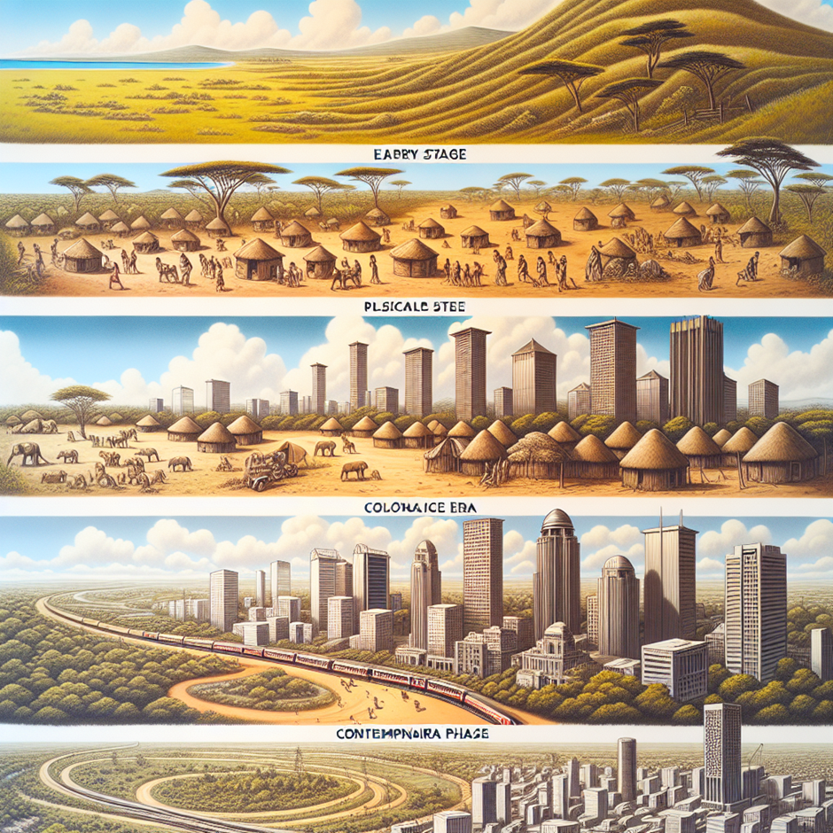

Introduction
In the bustling heart of East Africa, Nairobi stands as a stark symbol of urban hardship juxtaposed against a backdrop of natural beauty. A city that has grown exponentially over the decades now faces a grave challenge: the onslaught of flooding that wreaks havoc on its landscape and its people. The recent floods, which have swept through neighbourhoods and upturned lives, are not merely acts of an unpredictable climate but also a consequence of a deeply rooted predicament - poor urban planning.
The land of Nairobi, once known for its riveting wildlife and scenic vistas, has succumbed to the pressures of urban sprawl. This sprawling development has strained the very fabric of the city’s resilience to the natural elements - a strain most evident when the skies above turn vengeful. The recurrent flooding episodes underscore a glaring disregard for sustainable spatial and urban planning, leaving residents to navigate the deluge with little defense.
This article aims to shed light on the intricate relationship between urban planning, land use, and flood resilience. With insights into the historical context, the disastrous impact of lax regulations, and feasible strategies for land use improvement, we will explore how Nairobi can reroute its course towards a sustainable future. By integrating planning, spatial awareness, and urban considerations into a cohesive approach, we aspire to reveal a path that mitigates the risks and elevates the standard of living for all Nairobians.
As we delve into the depths of Nairobi’s flood crisis, we underscore the premise that with strategic vision and a steadfast commitment to sustainable practices, the tides can indeed be turned.
Historical Overview of Urban Planning in Nairobi
The tale of Nairobi’s urbanization is one of unchecked expansion and rapid developmental spurts. Founded as a simple rail depot on the Uganda Railway at the end of the 19th century, Nairobi soon burgeoned into a bustling metropolis, pulling people from diverse backgrounds into its fold. However, this brisk transformation from a provincial outpost into Kenya’s capital did not come supported by strong urban planning frameworks. Over the years, the city’s planning efforts have struggled to keep pace with its explosive population growth and the resultant demand for housing and infrastructure.
In the early days, colonial urban design did little to anticipate the future needs of the nascent city. Post-independence, Nairobi experienced surges in population as rural-to-urban migration intensified. The demand for space translated into sprawling informal settlements and haphazard construction largely outside the purview of urban regulation. Inadequate resources and the complexity of land ownership further complicated planning efforts, miring them in legal and political bottlenecks.
The effects of these historical planning inefficiencies are starkly visible today. The city’s existing layout struggles to support effective drainage, an issue compounded by neglect and natural watershed obstruction. Crucial urban services like waste management have also lagged, adversely affecting the city’s ability to manage heavy rainfall. As a result, floodwaters gather with nowhere to flow, turning streets into rivulets and homes into islands.
This historical account of Nairobi’s urban planning establishes a baseline to understand its current resilience against floodwaters and underscores the dire need for a forward-thinking urban policy that prioritizes sustainable land use and rigorous spatial planning.

The Consequences of Inadequate Urban Planning
The consequences of Nairobi’s inadequate urban planning are manifest in the frequent and destructive floods that the city witnesses. These deluges do not only hamper daily life but also exact a heavy toll on the health, property, and livelihoods of Nairobians. The chaotic urban sprawl, largely unchecked by regulatory frameworks, has exacerbated vulnerabilities across the city, especially in underserved communities.
As settlements expanded into floodplains and wetlands, these ecologically critical areas transformed into densely populated neighborhoods. With minimal consideration for environmental or infrastructural resilience, these regions became hotspots for disaster during the rainy seasons. Flooding in such areas often leads to displacement of families, loss of educational opportunities due to school closures, and exacerbation of health crises through waterborne diseases.
The economic impact is also substantial. Businesses suffer interrupted operations and loss of inventory due to floodwaters, while the city faces massive costs for emergency response, infrastructure repair, and subsequent urban planning rectifications. Moreover, the sight of Nairobi’s major roads transformed into impassable rivers during heavy rain is a sobering testament to the current inadequacy of drainage systems that should have been integral to urban development plans.
Beyond the immediate repercussions, the cyclical floods erode trust in public systems and leadership, as repeated incidents illustrate the lack of long-term solutions and the failure to learn from past mistakes. The community’s resilience is tested time and again, and although the spirit of Nairobi’s residents remains indefatigable, the necessity for systemic change is undeniable.
As Nairobi continues to navigate these flood waters, it becomes increasingly clear that the solutions must be as dynamic and multifaceted as the problems. The subsequent sections of this discourse will delve into the synergetic strategies needed to reconstruct Nairobi’s defenses against the deluge, illuminating pathways toward flood resilience and sustainable urban management.
Urban Planning and Flood Mitigation
In addressing Nairobi’s flooding challenges, urban planning emerges as a critical tool for flood mitigation and building resilience. Effective urban planning can significantly reduce the risks associated with flooding by prioritizing land use that incorporates flood risk management as a fundamental criterion.
Key to this approach is employing strategic zoning laws that prevent construction in high-risk flood zones, particularly along waterways and in areas prone to waterlogging. Building codes and guidelines must be strictly enforced, advocating for construction that is both resilient and cognizant of natural water flow patterns. Retrofitting existing structures with flood-proofing measures is equally vital to improve resilience.
An essential facet of flood mitigation in urban planning is the development of robust drainage infrastructure. Nairobi requires an overhaul of its drainage systems, with a focus on increasing capacity and regular maintenance to prevent blockages. Moreover, green infrastructure solutions like rain gardens, permeable pavements, and green roofs could enhance the city’s absorption capacity, offering a sustainable method to reduce surface runoff.
Another factor in effective flood mitigation is the restoration and preservation of natural ecosystems such as wetlands and forests within and around urban areas. These serve as natural sponges, absorbing excess rainfall and releasing it slowly, thereby reducing flood peaks and the load on man-made drainage systems.
Additionally, planning must involve community engagement to ensure that local knowledge and needs are integrated into flood risk management strategies. Public awareness campaigns can also play a role in educating citizens on the importance of proper waste disposal and environmental stewardship to prevent drainage blockages and protect water catchment areas.
Through integrating these approaches into urban planning frameworks, Nairobi can move towards a more proactive stance in flood management. Creating space for water within the city’s planning paradigm is not just about adapting to the inevitability of flooding but is about shaping a city that aligns harmoniously with its natural environment.
Sustainable Land Use and Flood Resilience
The intersection of sustainable land use and flood resilience in Nairobi calls for a paradigm shift in how urban spaces are designed and managed. For Nairobi, creating a resilient urban environment demands the introduction of innovative land-use strategies that respect the city’s ecological boundaries while accommodating its growth.
The concept of sustainable land use is pivotal to flood resilience and involves adapting urban development to the local environment’s capacity. By emphasizing conservation and the intelligent use of natural resources, sustainable strategies aim to reduce the impact of flooding. Spatial planning, therefore, must integrate natural drainage corridors into urban landscapes, safeguarding and enhancing them as part of the city’s green infrastructure.
An innovative approach to land use involves the adoption of “smart growth” principles, which encourage high-density development in appropriate areas while preserving significant ecological zones. Through this, Nairobi can contain urban sprawl, reduce habitat fragmentation, and maintain the functions of natural ecosystems that mitigate flood risks.
Mixed land-use development and transit-oriented design can also play a role in redefining Nairobi’s urban landscape, emphasizing walkability and reducing dependency on vehicles. This, in turn, diminishes the extent of impermeable surfaces and contributes to the reduction of surface runoff.
The implementation of these sustainable land-use models involves stringent policy enforcement and effective governance. Regulations need to be put in place to guide development away from flood-prone areas, and incentives should be established for developers to adhere to sustainable practices. Furthermore, urban renewal initiatives may necessitate the redesign and reconstruction of existing neighborhoods to integrate flood resilience measures.
By incorporating sustainable land use as a core component of urban planning, Nairobi can construct an environment that not only stands up to the rigors of nature but also fosters ecological balance and enhances the quality of life for its residents.
Moving Forward: Strategies and Interventions
As Nairobi forges ahead, strategies and interventions become critical in redefining the city’s relationship with its water systems to achieve a resilient and sustainable urban future. Moving forward requires a multi-tiered approach involving policy reform, infrastructure development, and collaboration among various sectors.
At the policy level, a comprehensive urban planning framework that prioritizes flood resilience is indispensable. Legislation should not only enforce spatial planning that accounts for water absorption and flow but also integrate disaster risk reduction into all aspects of urban governance. Redefining land use priorities, tightening construction regulations, and protecting green spaces should be at the forefront of this reformative wave.
Infrastructure-wise, the investment should focus on both upgrading existing systems and innovating new solutions. Expanding and maintaining Nairobi’s stormwater drainage network is essential, as is the promotion of green infrastructure, which offers cost-effective and environmentally friendly alternatives. The city might also consider establishing flood barriers in strategic locations and incorporating water storage facilities that can alleviate pressure during heavy rainfall.
Community-based interventions play a substantial role, ensuring that the urban populace is both a contributor to and a beneficiary of flood mitigation efforts. Empowering communities with the knowledge and resources to implement local-scale flood defenses, like rainwater harvesting and communal drainage systems, can dramatically increase adaptive capacity.
An interdisciplinary approach involving urban planners, environmental experts, civil society, and the private sector will provide the insight and innovation needed to tackle the complex challenges posed by urban flooding. Sharing best practices and learning from both local and international experiences would enrich the know-how and amplify the strategies being adopted.
Ultimately, fostering a culture of resilience that transcends socio-economic and political barriers can lead Nairobi towards a future that is not only enduring in the face of environmental adversities but also shines as a beacon of sustainable urban development.